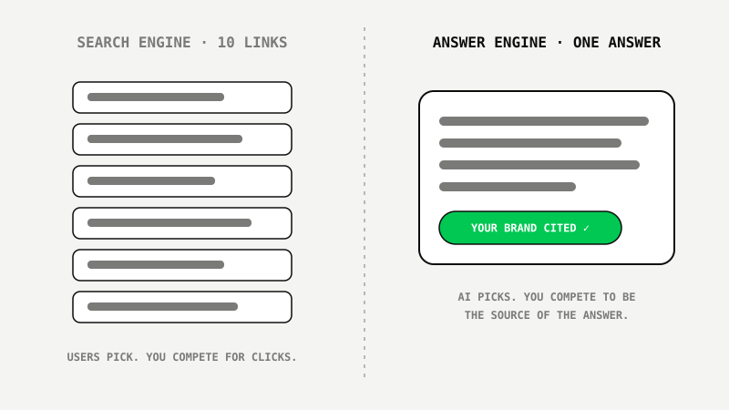
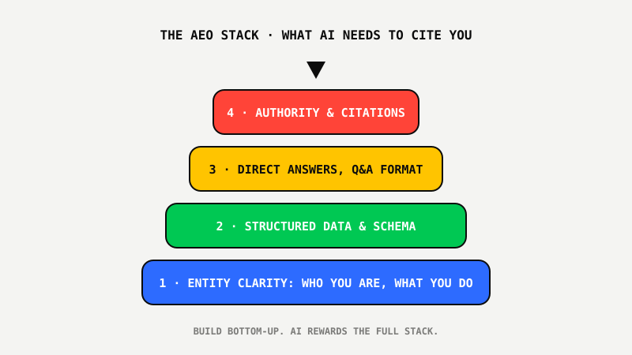

Answer Engine Optimization (AEO): How To Get Cited By ChatGPT, Gemini & Perplexity
 By Akshat Singh··9 min read·SEO & AI Search
By Akshat Singh··9 min read·SEO & AI Search
Key Takeaways
- Answer Engine Optimization (AEO) is the practice of making your business citable inside AI-generated answers on ChatGPT, Gemini, Perplexity and Google AI Overviews.
- Answer engines don't show 10 options. They synthesize one answer and cite few sources; being one of them is winner-take-most visibility.
- The AEO stack has 4 layers: entity clarity, structured data, answer-format content, and authority signals.
- AEO compounds with classic SEO: the same clean structure that ranks you also makes you machine-readable.
What Is Answer Engine Optimization?
Answer Engine Optimization (AEO) is the practice of structuring your website, content and authority signals so AI systems like ChatGPT, Gemini, Perplexity and Google AI Overviews cite your business when answering your customers' questions.
That single paragraph you just read is itself AEO: a direct, self-contained answer positioned at the top of the section, exactly the format answer engines love to lift.
Search isn't disappearing. It's expanding. Your customers now ask an AI assistant "what's the best CRM for a small agency?" or "which running shoes are best for flat feet?" and act on the answer, often without visiting a results page at all.

Why AEO Is Winner-Take-Most
A search results page shows ten organic results, ads, maps and shopping units. Position four still gets traffic. An AI answer typically synthesizes from a handful of sources and mentions two or three brands. If you're not in the answer, you don't exist for that query.
The upside: most of your competitors haven't started. Early movers in AEO are compounding an advantage that will be brutally expensive to catch later. As we argued in The Death Of Traditional SEO, the businesses that adapt now will own the next decade of search.
The 4-Layer AEO Stack

Layer 1: Entity clarity
AI systems reason about entities: who you are, what you do, who you serve, how you relate to other entities. Consistent naming everywhere, an unambiguous About page, consistent NAP data, and the same descriptions across your site, LinkedIn, directories and profiles. If a machine can't tell exactly what you are, it will never cite you.
Layer 2: Structured data & schema
Schema markup (Organization, Service, Product, FAQPage, Article, HowTo) is how you speak natively to machines. It removes guesswork: prices, offers, authorship, question-answer pairs all become explicit, verifiable facts.
Layer 3: Answer-format content
Write for extraction. Lead sections with direct answers, then expand. Use real questions as H2/H3 headings, matching how people phrase them to AI. Keep answers self-contained: a paragraph that makes sense on its own is a paragraph that can be cited on its own. FAQ blocks on every important page.
Layer 4: Authority & citations
AI systems weigh consensus. Mentions across trusted publications, consistent reviews, real expertise signals (named authors, credentials, original data) all raise the probability that a model trusts you enough to name you. Original research and specific numbers are citation magnets.
A Practical 30-Day AEO Starting Plan
- Week 1: Audit entity clarity. Fix inconsistent business descriptions across your site and profiles. Ship Organization schema.
- Week 2: Add FAQPage schema and genuine FAQ sections to your money pages, answering the questions buyers actually ask AI.
- Week 3: Rewrite your top 10 pages in answer-first format: direct answer up top, question-based headings, self-contained paragraphs.
- Week 4: Test yourself. Ask ChatGPT, Gemini and Perplexity the questions your customers ask. Track when and where you appear, and iterate monthly.
The honest caveat: nobody can guarantee inclusion in AI answers, and anyone who promises it is selling snake oil. What you can do is systematically align with how these systems select sources. That's exactly the continuous work SEO Autopilot™ automates, for Google and answer engines at the same time.
Want your business optimized for Google and AI answers at the same time?
See SEO Autopilot™ In Action ↗